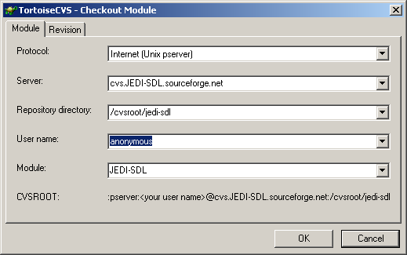
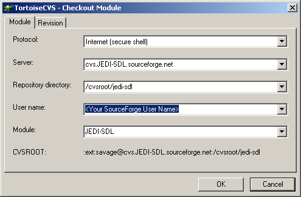

Hi All,
This is my quick step setup guide, to getting
SourceForge
working on your Win32 system. A lot of the information I have here is
based on
Martijn Melenhorst's SourceForge Setup Guide
.
Though this guide is quite comprehensive, I have found that the simplest
way of accessing Sourceforge is using
TortoiseCVS
, which is what I will be using in this tutorial.
Before we start
The tools we will need to get started are as follows...
1 copy of
TortoiseCVS
<http://www.wincvs.org/TortoiseCVS/index.html>
1 copy of
Putty-KeyGen
<http://www.chiark.greenend.org.uk/~sgtatham/putty/download.html>
1
SourceForge account
!
1 hot cup of Patience.
Installation
Once you have downloaded
TortoiseCVS
, run the installation program.
Once
TortoiseCVS
is installed, copy
Putty-KeyGen
to the same directory that you installed
TortoiseCVS
to.
Environment Variables
TortoiseCVS
requires a HOME environment variable to be setup up before it can be used
effectively.
- Win2000 and XP users do this...
- Right Click on My Computer and select "Properties".
- Select the "Advanced" tab and click on the "Environment Variables"
button. You should have a screen that split into 2 categories. The top half
should have Environment variables that pertain to you as a user and the
bottom half should have environment varibles that pertain to your system.
- In the user half of the screen Click the New button and add an
environment variable called HOME and and the value should be the path to
where your CVS home directory will be. To keep everything simple and in
one place, mine is the same directory that I installed
TortoiseCVS
to.
- Win9x, WinMe users do this...
- Edit c:\autoexec.bat, and add the line : "SET HOME=<CVS HOME
Directory>", In my case, as mentioned above the <CVS HOME Directory>
is my TortoiseCVS
installation directory.
- Win9x, WinMe user will need to reboot for the changes to take effect.
Key Pair Generation
NOTE : Only generate Key Pairs if you plan to actively develop on a particular
SourceForge
project. If you do not plan to be an active developer and just want to
download source code from
SourceForge
CVS, jump to the next section. Those of you who will be working on a
SourceForge
project, please read on.
In order to use
SourceForge
as an active developer, you will need to a SSH key pair.
SourceForge
requires you to have a private and public key in order to Check-In any
changes you may be making to a project.
Start PuTTY-KeyGen and generate a keypair with all default settings
Insert your e-mail address as the 'Key comment' (not necessary, but
this is common practice)
Save the private keyfile to "<CVS HOME Directory>\.ssh\identity"
Save the public keyfile to "<CVS HOME Directory>\.ssh\identity.pub
"
Copy the contents of the public key from the PuTTY KeyGen window and
paste it into the textbox at this URL:
https://sourceforge.net/account/editsshkeys.php. This will upload your
public key to
SourceForge
It can take up to
6 hours for SourceForge to recognize your new
SSH key!
At this point you just need to wait until this 6 hour delay has passed
and just about the only thing you can do is Check-Out the CVS SourceCode
anonymously ( See below ).
Make sure that you have informed the project administrator, that you wish
to be a developer on that particular project, so that they can add you to
the developers list.
If you are not added to the SourceForge project's developers list, you
will not be able to Check-In changes you have made to the project source
code.
Delphi Project Specifics
This is not really needed, but it saves everyone who wants to co-develop
or stay up-to-date a lot
of work :
You specify a .cvsignore file, which WinCVS and TortoiseCVS will respect.
The matches
specified in this file will be treated as non-CVS-project files. TortoiseCVS
has one bad habit
with this file though: Adding new project files that should be ignored
is still possible!
Go to the directory that contains the project, and add 1 file : .cvsignore
Windows Explorer won't allow you to name a file like this, so will need
to use a DOS prompt and the 'Edit'
command for this. Or altenatively you could name the file something
like t.cvsignore ( Which Windows Explorer allows ) and then from the DOS
prompt you can type :
ren t.cvsignore .cvsignore
Insert this content into the file:
*.~*
*.dcu
*.bpl
*.dcp
*.cfg
*.dof
*.dsm
*.exe
tmp*
You can add other more project-specific matches to this list.
TortoiseCVS configuration
Open up Windows Explorer.
Right-click on the project directory in Windows Explorer
Select 'CVS->Preferences...' from the shortcut-menu
Go to the 'Quirky' tab
Uncheck 'Always recalculate home directory'
Press 'Ok'
Using TortoiseCVS
Before you start using TortoiseCVS, have some kind of Directory structure
thought-out first. I have an "OpenSource" directory under which all the
SourceForge projects exist. Planning a directory structure is even more
important when you are starting your own project and which to upload a module.
NOTE : In the following examples, case is always important!

- Right click on a Directory within Explorer, select "CVS CheckOut"
from the context sensitive menu.
- Protocol : Ususally "Internet ( Unix pserver )"
- Server : will look something like this "cvs.<Project Name>.sourceforge.net"
- Repository Directory : /cvsroot/<Project Name>
- UserName : anonymous
- Module : <Module Name> usually the top level directory name
, though the project admin could tell you.
- UserName Check-Out

- Right click on a Directory within Explorer, select "CVS CheckOut"
from the context sensitive menu.
- Protocol : Ususally "Internet ( secure shell )"
- Server : will look something like this "cvs.<Project Name>.sourceforge.net"
- Repository Directory : /cvsroot/<Project Name>
- UserName : <Your SourceForge User Name>
- Module : <Module Name> usually the top level directory name,
though the project admin could tell you.
- Make New Module
- These steps will only concern you if you are uploading a new Module
to SourceForge.
- Right click on a Directory within Explorer, select "Make New Module"
from the context sensitive menu.
- CVS Update
- Select this option if you want to grab the latest version of a direcory
or file from SourceForge
- Right click on a Directory or file within Explorer, select "CVS
Update" from the context sensitive menu.
- This will cause TortoiseCVS to update the selected file or
directory with any changes found on the SourceForge Server.
- CVS Commit
- Select this option if you have made changes to some source code
and you wish to upload these changes to the SourceForge CVS.
- Right click on a Directory or file within Explorer, select "CVS
Commit" from the context sensitive menu.
- You should get a screen that looks similar to the one above.
As you can see, once you have everything set up, Checking code in and Out
of a CVS repository is quite easy using
TortoiseCVS
.